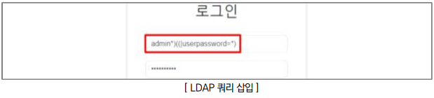
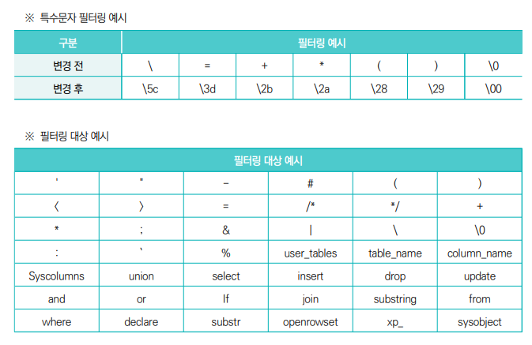

LDAP는 공격자가 웹 애플리케이션의 입력창에 악의적인 LDAP 구문을 삽입하여, 백엔드 LDAP 서버의 쿼리 로직을 조작하는 코드 인젝션 공격입니다.
SQL 인젝션이 데이터베이스를 공격한다면, LDAP 인젝션은 사내 주소록, 권한 관리 시스템, 로그인 인증 서버 등을 타깃으로 합니다.
- 점검 방법
사용자 입력값에 대하여 변조된 LDAP 쿼리 삽입 후 실행 가능 여부 확인하기

- 조치 방법
1.사용자 입력값을 화이트리스트로 지정하여 영문(a-z, A-Z)과 숫자(0-9)만을 허용
2. 특수문자를 사용해야 하는 경우 입력값(DN에 사용되는 특수문자는 '\'를 붙여 이스케이프 처리, 필터에 사용되는 특수문자는 '= + < > # \ , ; 앞뒤 공백' 등)에 대해서는 실행 명령이 아닌 일반문자로 인식되도록 처리
이스케이프란?
- 특정문자를 일반문자로 치환해주는 보안기술
3. DN과 필터에 사용되는 사용자 입력값에는 특수문자 제거
4. 웹 방화벽에 LDAP 관련 특수문자를 필터링하도록 룰셋 적용
